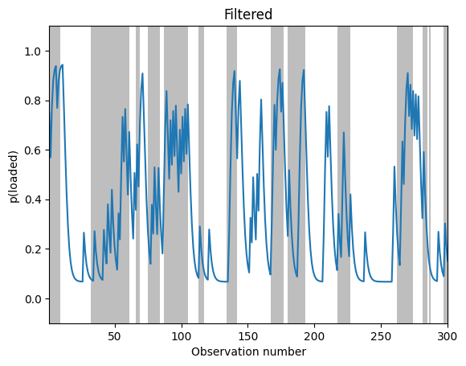
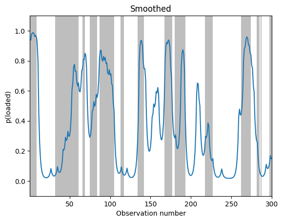
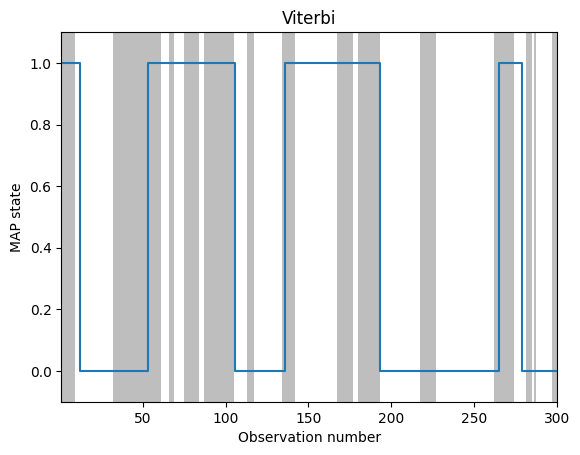

Casino HMM: Inference (state estimation)
Contents
Casino HMM: Inference (state estimation)#
We use a simple example of an HMM from known as the “occasionally dishonest casino”. This is from the book “Biological Sequence Analysis: Probabilistic Models of Proteins and Nucleic Acids” by R. Durbin, S. Eddy, A. Krogh and G. Mitchison (1998).
Setup#
try:
import dynamax
except ModuleNotFoundError:
print('installing dynamax')
%pip install -qq git+https://github.com/probml/dynamax.git
import dynamax
from functools import partial
import jax.numpy as jnp
import jax.random as jr
from jax import vmap
import matplotlib.pyplot as plt
from dynamax.hmm.models import CategoricalHMM
WARNING:jax._src.lib.xla_bridge:No GPU/TPU found, falling back to CPU. (Set TF_CPP_MIN_LOG_LEVEL=0 and rerun for more info.)
Make model#

init_dist = jnp.array([1, 1]) / 2
A = jnp.array([[0.95, 0.05], [0.10, 0.90]])
B = probs=jnp.array(
[
[1 / 6, 1 / 6, 1 / 6, 1 / 6, 1 / 6, 1 / 6], # fair die
[1 / 10, 1 / 10, 1 / 10, 1 / 10, 1 / 10, 5 / 10], # loaded die
]
)
print(B.shape)
(2, 6)
num_states = 2
num_emissions = 1 # 1d output
num_classes = 6 # size of output alphabet
hmm = CategoricalHMM(num_states, num_emissions, num_classes)
params = dict(
initial=dict(probs=init_dist),
transitions=dict(transition_matrix=A),
emissions=dict(probs=B.reshape(num_states, num_emissions, num_classes))
)
Sample data from model#
n_timesteps = 300
true_states, emissions = hmm.sample(params, jr.PRNGKey(42), n_timesteps)
print(true_states.shape)
print(emissions.shape)
(300,)
(300, 1)
# To sample multiple sequences, just use vmap
num_batches = 5
num_timesteps = 300
batch_states, batch_emissions = \
vmap(partial(hmm.sample, params, num_timesteps=num_timesteps))(
jr.split(jr.PRNGKey(0), num_batches))
print(batch_states.shape) # (5, 300)
print(batch_emissions.shape) # (5, 300, 1)
(5, 300)
(5, 300, 1)
def print_seq(true_states, emissions):
T = 70
to_string = lambda x: "".join(str(x + 1).split())
print("hid: ", to_string(true_states[:T]))
print("obs: ", to_string(emissions[:T, 0]))
print_seq(batch_states[0], batch_emissions[0])
print_seq(true_states, emissions)
hid: [2222211111111111111111111111111112222222222111111111111111111111111112]
obs: [6636644222425254541366534156435555311662663315351616222626113131426326]
hid: [2222222221111111111111111111111122222222222222222222222222222111112221]
obs: [6166665666644432314213244562342433654325363462364513646626146325646366]
# count fraction of times we see 6 in each state
obs = emissions + 1
hid = true_states + 1
p0 = jnp.mean(obs[hid==1] == 6) # fair
p1 = jnp.mean(obs[hid==2] == 6) # loaded
print('empirical frequencies: ', jnp.array([p0, p1]))
print('expected frequencies: ', [1.0/6, 5.0/10])
empirical frequencies: [0.14970061 0.46616542]
expected frequencies: [0.16666666666666666, 0.5]
Filtering (forwards algorithm)#
posterior = hmm.filter(params, emissions)
print(posterior.marginal_loglik)
print(posterior.filtered_probs.shape)
-517.9524
(300, 2)
Plotting code#
import numpy as np
# Helper functions for plotting
def find_dishonest_intervals(states):
"""
Find the span of timesteps that the
simulated systems turns to be in state 1
Parameters
----------
states: array(n_timesteps)
Result of running the system with two
latent states
Returns
-------
list of tuples with span of values
"""
states = np.array(states)
changepoints = np.concatenate([[0], np.nonzero(np.diff(states))[0] + 1, [len(states)]])
starts, ends = changepoints[:-1], changepoints[1:]
# Return the (start, end) pairs where the start state is 1
dishonest = states[starts] == 1
return list(zip(starts[dishonest], ends[dishonest]))
def plot_inference(inference_values, states, ax, state=1, map_estimate=False):
"""
Plot the estimated smoothing/filtering/map of a sequence of hidden states.
"Vertical gray bars denote times when the hidden
state corresponded to state 1. Blue lines represent the
posterior probability of being in that state given different subsets
of observed data." See Markov and Hidden Markov models section for more info
Parameters
----------
inference_values: array(n_timesteps, state_size)
Result of running smoothing method
states: array(n_timesteps)
Latent simulation
ax: matplotlib.axes
state: int
Decide which state to highlight
map_estimate: bool
Whether to plot steps (simple plot if False)
"""
n_timesteps = len(inference_values)
xspan = np.arange(1, n_timesteps + 1)
spans = find_dishonest_intervals(states)
if map_estimate:
ax.step(xspan, inference_values, where="post")
else:
ax.plot(xspan, inference_values[:, state])
for span in spans:
ax.axvspan(*span, alpha=0.5, facecolor="tab:gray", edgecolor="none")
ax.set_xlim(1, n_timesteps)
# ax.set_ylim(0, 1)
ax.set_ylim(-0.1, 1.1)
ax.set_xlabel("Observation number")
fig, ax = plt.subplots()
plot_inference(posterior.filtered_probs, true_states, ax)
ax.set_ylabel("p(loaded)")
ax.set_title("Filtered")
fig.show()
# pml.savefig("hmm_casino_filter")

Smoothing (forwards-backwards algorithm)#
posterior = hmm.smoother(params, emissions)
print(posterior.smoothed_probs.shape)
(300, 2)
fig, ax = plt.subplots()
plot_inference(posterior.smoothed_probs, true_states, ax)
ax.set_ylabel("p(loaded)")
ax.set_title("Smoothed")
fig.show()
# pml.savefig("hmm_casino_smooth")

MAP sequence (Viterbi algorithm)#
most_likely_states = hmm.most_likely_states(params, emissions)
fig, ax = plt.subplots()
plot_inference(most_likely_states, true_states, ax, map_estimate=True)
ax.set_ylabel("MAP state")
ax.set_title("Viterbi")
fig.show()
